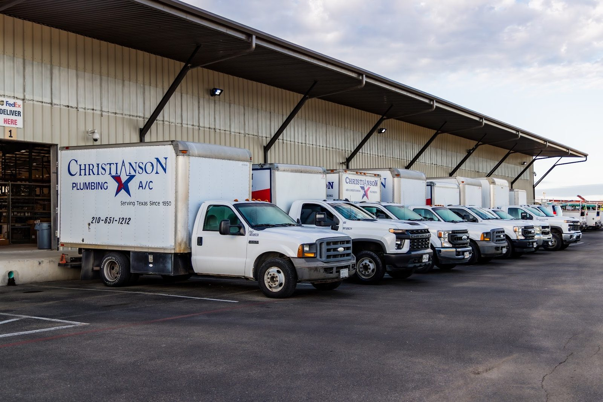

AC repair and installs
New HVAC systems and repairs, installed and serviced by the same crew.
- AC repair
- New HVAC systems
- Condensers

AC & plumbing · Round Rock, TX
AC, water heaters and plumbing from a crew that follows up until it is right.

Thorough visits, a follow up when you are unsure, and installs that look as good as they work.
Services
AC, water heaters, plumbing and water softeners for homes around Round Rock and Austin.
New HVAC systems and repairs, installed and serviced by the same crew.
A thorough yearly visit, plus a follow up to recheck everything when needed.

Tank water heaters installed and serviced by two-person crews with a ladder and the right tools.

Faucets, fixtures and burst water lines, including emergencies.
Custom softener and filter installs that look good and work well.
Routine yearly visits and a crew that comes out when a line bursts.
The work


Reviews
4.1522 Google reviews
Top notch plumbers they installed the softener and filters system and installed both and made it fully custom work that looks and works amazing… Big thanks to Chris I’m sure no one has a setup like this in Easton Park.
New customer needing my AC to be looked at after noticing some changes to our cooling, so signed up for Christianson's Maintenance Plan. Nothing was found in the very thorough service visit by their rep OG, but because of my concern he immediately set up a week-later follow-up visit in the hottest part of the day to re-check everything.
As a long-standing customer of Christianson, I have only experienced exceptional service from the installation of a new HVAC system and water heater, an emergency burst water line, and routine annual maintenance. Ray C. was fantastic during today's AC maintenance visit. He was thorough, prompt, and took the time to make sure everything was running properly.

About
Christianson Air Conditioning and Plumbing has served Texas since 1950. The 75th anniversary logo is up on the office screens.
The crew works out of Round Rock and heads to Austin and San Antonio too. Custom installs, thorough maintenance visits, and a call back when something needs another look.
Call or stop by
1950 Louis Henna Blvd, Round Rock, TX 78664 Directions
The shop is on Louis Henna Blvd. Call ahead before you drive over.